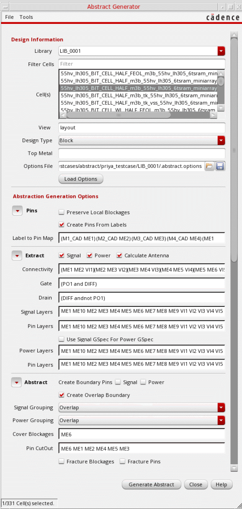

6
Integrated Abstract Generator
集成版 Abstract Generator
The integrated Abstract Generator lets you generate abstracts while you are working on layout designs in the Virtuoso Studio design environment. It is a subset of the standalone Abstract Generator tool, with the minimum and mandatory user interface options. It is presented as a form in which all the abstract steps are available, segregated through progressive disclosure buttons, with the most frequently used options as part of main Abstract Generator flow steps.
集成版 Abstract Generator 允许你在 Virtuoso Studio 设计环境中进行版图设计时生成 abstract。它是独立版 Abstract Generator 工具的一个子集，仅包含最低限度且必需的界面选项。它以表单形式呈现：所有 abstract 步骤都可用，并通过渐进式披露按钮进行分区；最常用的选项作为主 Abstract Generator 流程步骤的一部分提供。
The integrated Abstract Generator in the Virtuoso Studio design environment is a simple interface to generate abstracts for one or more cellviews.
Virtuoso Studio 设计环境中的集成版 Abstract Generator 提供一个简单界面，用于为一个或多个 cellview 生成 abstract。
To launch the integrated Abstract Generator interface, do the following:
要启动集成版 Abstract Generator 界面，请执行以下操作：
-
In the CIW, choose Tools - Abstract Generator.
在 CIW 中，选择 Tools - Abstract Generator。
The Abstract Generator form is displayed.
将显示 Abstract Generator 表单。
You can load values in the Abstract Generator form, run the Abstract Generator steps and view the results during the abstract generation process.
你可以在 Abstract Generator 表单中加载参数，运行 Abstract Generator 各步骤，并在 abstract 生成过程中查看结果。
Related Topics
相关主题
Viewing Results in the Abstract Generator Form
Customizing Abstract Generator Flow Using SKILL Files
使用 SKILL 文件自定义 Abstract Generator 流程
Integrated Abstract Generator Form
Return to top